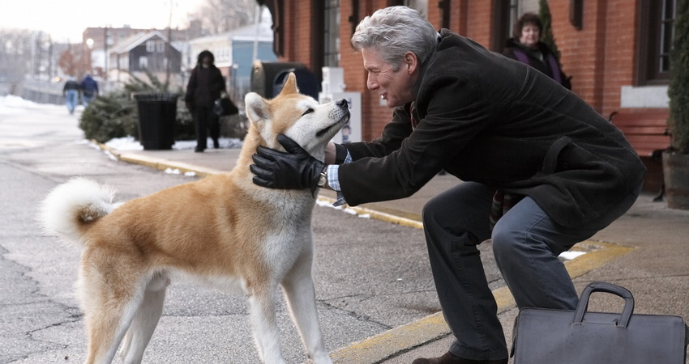

'HACHIKO: A DOG'S STORY', Kisah Persahabatan Abadi
Ada yang bilang kalau anjing adalah teman terbaik manusia. Mungkin tidak salah juga kalau melihat kisah yang dialami oleh Parker Wilson (Richard Gere) dan anjing kesayangannya. Kisah persahabatan Parker dan anjing bernama Hachiko ini bahkan mampu memberikan inspirasi pada seluruh warga kota tentang makna persahabatan sesungguhnya.
Pertemuan antara Parker dan Hachiko pun sebenarnya terjadi tanpa sengaja. Hachiko adalah anjing tanpa tuan yang ditemukan Parker saat ia pulang kerja. Parker sebenarnya bermaksud mencari pemilik Hachiko untuk mengembalikan anjing ini namun saat usaha itu tak menemui jalan Parker akhirnya memutuskan untuk memelihara Hachiko.
Setiap hari Hachiko selalu mengantar Parker ke stasiun saat pria yang bekerja sebagai dosen ini berangkat kerja. Dan setiap sore pula Hachiko datang menjemput Parker ke stasiun saat ia pulang kerja. Suatu ketika, Parker berangkat kerja seperti biasa namun tak pernah kembali ke stasiun itu. Parker meninggal sebelum ia pulang. Hachiko yang tak tahu kalau majikannya telah tiada tetap datang setiap sore berharap bertemu Parker lagi.
Hari berlalu dan sembilan tahun sudah Hachiko selalu datang ke stasiun untuk menjemput majikannya. Meski Hachiko tak pernah lagi bertemu Parker namun Hachiko tak pernah menyerah.
Menguras air mata. Sepertinya hanya itu kalimat yang paling tepat menggambarkan film berjudul HACHIKO: A DOG'S STORY ini. Kisahnya sendiri sebenarnya tak bisa dibilang baru karena kisah persahabatan antara manusia dan anjing memang sudah berkali-kali dituangkan ke layar lebar. Kalaupun ada yang menarik hanyalah gambaran kesetiaan Hachiko, sang anjing, yang tetap datang ke stasiun menunggu tuannya datang meski pada kenyataannya tuannya tak pernah kembali lagi.
Entah mengapa namun perasaan bahwa ada yang salah dengan film ini seolah tak bisa lepas dari benak saat menyaksikan film terbaru Richard Gere ini. Akting Richard Gere jelas tak perlu dipertanyakan sementara track record sutradara Lasse Hallström yang juga sempat menggarap film CHOCOLAT dan DEAR JOHN juga meyakinkan. Naskah yang dikerjakan Stephen P. Lindsey juga tak terlalu bermasalah meski sebenarnya ia bisa lebih mengembangkan kisah ini jadi sesuatu yang lebih luas.
Memang ada kesan bahwa keseluruhan kisah HACHIKO: A DOG'S STORY ini terlalu singkat untuk dijabarkan menjadi film sepanjang 104 menit. Beberapa karakter yang ada di stasiun kereta api sebenarnya bisa dibuatkan subplot sehingga bisa mendukung alur cerita utama. Tapi kalaupun itu diperbaiki, tetap saja ada sesuatu yang terasa janggal dari film ini. Setelah lama mencoba mencari jawabnya, ada satu kemungkinan yang terpikir. Sepanjang film, kesan yang terasa kuat adalah aroma Asia.
Meskipun para karakter utama dalam film ini sudah diganti dengan pemeran berkulit putih namun kesan Asia yang dibawa oleh kisah aslinya sepertinya masih belum bisa hilang. Sayang saya belum berkesempatan menonton versi asli dari film ini sehingga tak mungkin membuat komparasi antara kedua film ini. Tapi terlepas dari itu semua, HACHIKO: A DOG'S STORY tetaplah sebuah film yang sangat menarik.
Nonton Film Hachiko: A Dog's Story disini
Source